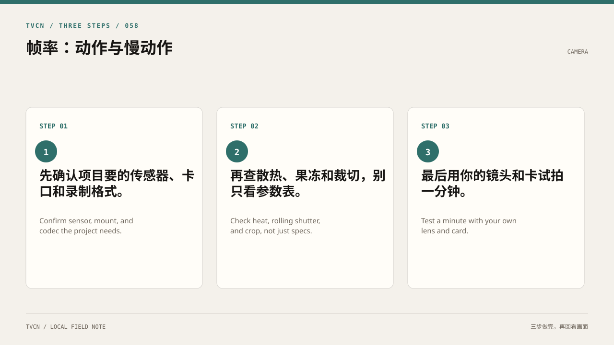

先定项目帧率，再谈慢动作
项目帧率决定声音、字幕和平台兼容；慢动作只是拍摄帧率。24/25/30 是叙事基准，60/120 用于后期放慢。不要在同一个项目里混用多个基准帧率。
慢动作要按“想放慢多少”算拍摄帧率：想放慢 2 倍，拍 48/50/60；想放慢 4 倍，拍 96/100/120。
边界
高帧率不是更“电影感”。它会让动作太顺、失去重量；叙事片通常用 24/25，慢动作只用在需要的镜头。
现场
25p 项目就用 25p 拍。要做两倍慢动作，用 50p、1/100 快门拍，回放检查有没有频闪。
DIAGRAM / Camera
三步流程

怎么做
拍之前先决定成片时间线和慢动作倍数。
- 25p 项目就用 25p 拍，时间线和素材保持一致。
- 要做两倍慢动作，用 50p、1/100 快门拍。
- 回放检查有没有频闪，再确认慢动作段落要放在哪一秒。
别踩
别把升格当慢放；拍的时候就要决定，后期硬慢会掉帧。
图片说明：本页封面、图解与步骤图是编辑示意或结构图，不是本页实测照片，也不能当作器材测试证据；AI 辅助生成的图会在图注标出。判断器材或画面，以正文的测试条件与现场记录为准。